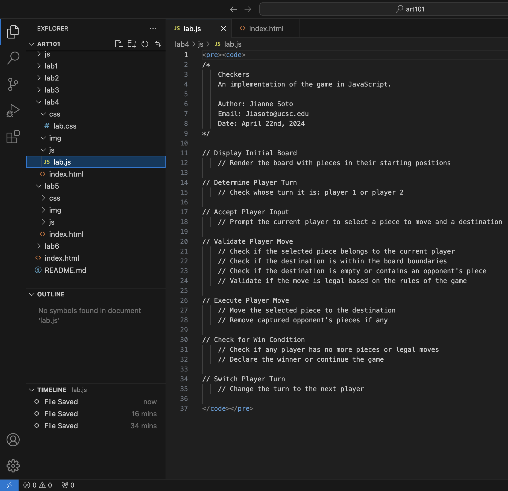
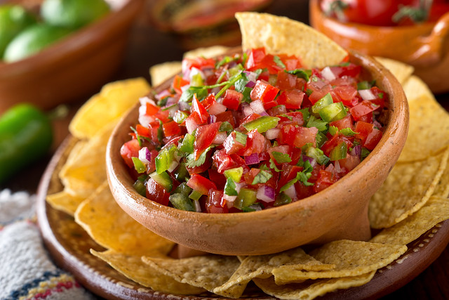
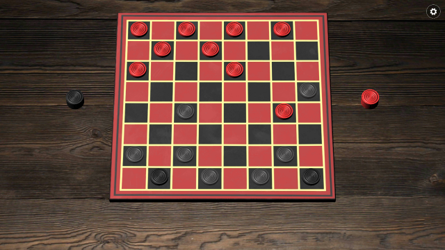

Lab 4 - Pseudocoding and Problem-Solving
Challenge
The challenge of this lab was learning how to operate JavaScript. While it was not too hard to manage, I had trouble creating the code and with the indentation. I also had trouble linking and getting my images to work in the HTML code.
Problems
Some problems I had for this lab were seeing if my images would work on the website. For some reason, my images would work if I command-o'd the code into the Chrome browser, but when I uploaded the code to GitHub, some of my images would not load. To solve this, I simply renamed my images and they showed up.
Results

Above is my Javascript code.
Pseudocode for an Everyday Task
// Pseudocode for an everyday task
// Task: Serving a bowl of salsa
1. Gather Ingredients
1.1. Tomatoes
1.2. Onion
1.3. Jalapeños
1.4. Cilantro
1.5. Lime
1.6. Salt
1.7. Garlic
2. Prepare Ingredients
2.1. Wash and chop tomatoes
2.2. Dice onion
2.3. Dice jalapeños
2.4. Chop cilantro
2.5. Juice lime
2.6. Mince garlic
3. Mix Ingredients
3.1. Combine tomatoes, onion, jalapeños, cilantro, lime juice, and garlic in a bowl
3.2. Add salt to taste
4. Taste and Adjust
4.1. Taste the salsa
4.2. Adjust seasoning if necessary
5. Serve
5.1. Transfer salsa to a serving bowl
5.2. Serve with tortilla chips

A Bowl of salsa
Pseudocode for a Simple Computer Game (Checkers)
// Pseudocode for a simple computer game
// Task: Creating a Checkers Game
1. Set up the game board
1.1. Create an 8x8 grid
1.2. Place black and white pieces on alternating squares
2. Define player actions
2.1. Select a piece to move
2.2. Choose a valid destination for the piece
2.3. Move the piece to the destination
3. Implement game logic
3.1. Validate player moves
3.2. Handle capturing opponent's pieces
3.3. Determine win or draw conditions

A Checkers game board